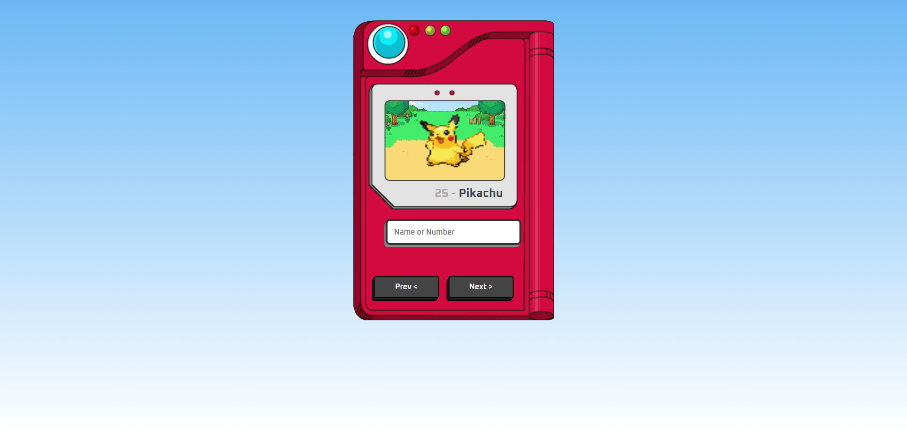
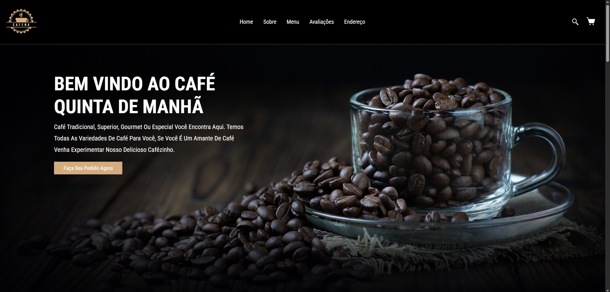
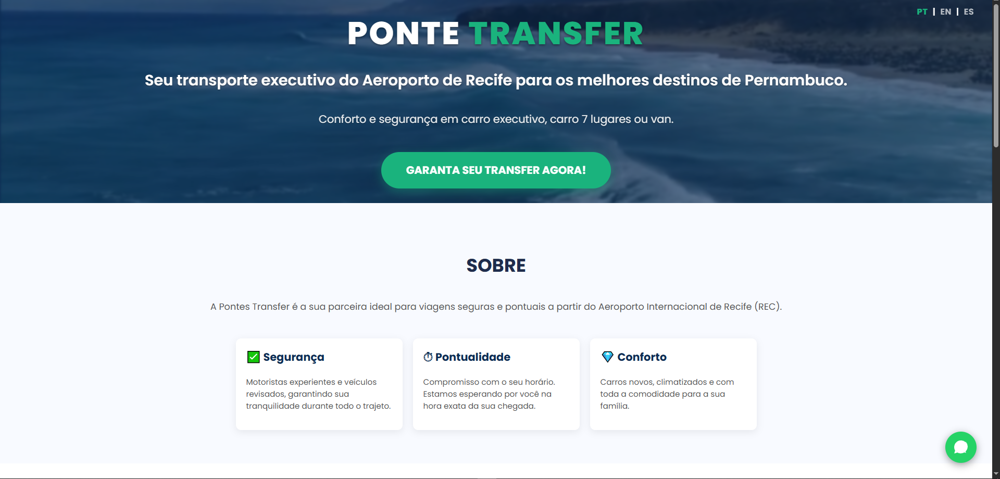

Últimos Projetos

Site Nubank
Site replicando o da Nubank

Pokedex Web
Aplicação web de uma pokedex contendo diversos pokemons de várias gerações

Tela de Login para Petshop
Tela inicial de cadastro com foco no designer.

Site de Café
Cafeteiria com desing bonito e minimalista, contendo diferentes tipos de cafés seus valores, avaliações, localização e redes sociais.

Wallpaper Pictures
Site contendo capturas de telas de diversos jogos que eu joguei nos ultimos meses.

Ponte Transfer
Trabalhei com um amigo criando esse site para agendamentos de viagens que está hospedado e pronto para ser acessado.